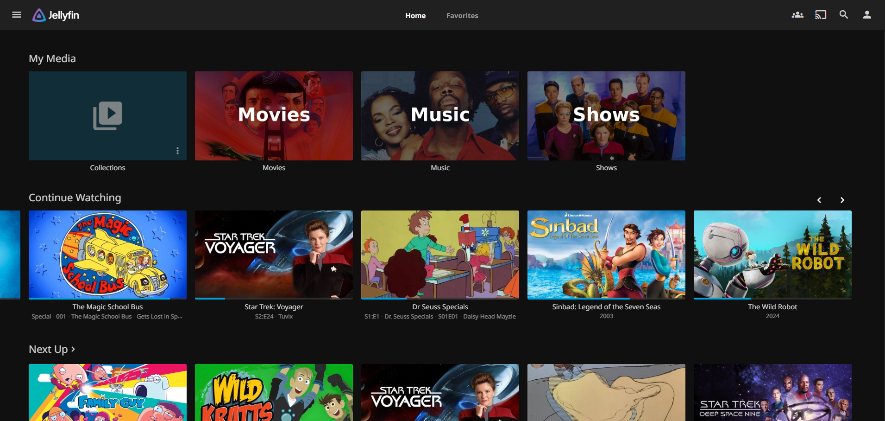
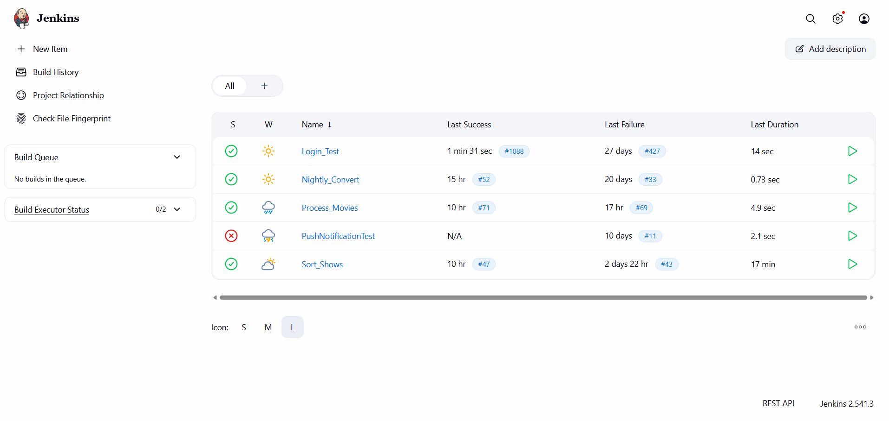
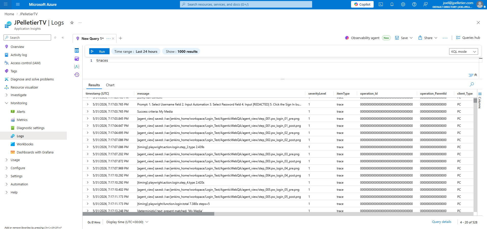
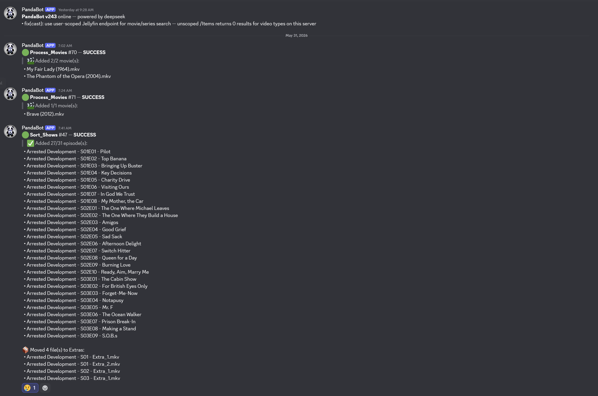

The result is MediaManagement, a collection of shell and Python scripts that takes a disc from "just inserted into the drive" to "playing on the TV with the right title, year, season, episode number, and matching subtitles" without me touching it.
This post is a tour of how the pipeline works and the reasoning behind a few of the choices.
The Problem
Building a media library by hand is the kind of work that sounds simple and then drowns you. Each disc needs to be ripped. Each rip produces a folder named something like BLURAY_DISC_TITLE_2 with twelve .mkv files inside, only one of which is the actual movie. TV box sets are worse. A season might be split across four discs, each disc has six unlabeled episodes, and the filenames are title_t00.mkv through title_t05.mkv.
Doing this by hand for a few hundred discs means a few hundred trips to TMDB, IMDB, and a careful renaming session. You end up watching parts of episodes to confirm which wastes a lot of time. It's not interesting work, and it's exactly the kind of pattern-matching task LLMs are now genuinely good at.
The Pipeline, End to End
Here's what happens when I insert a disc into the drive:
- udev detects the disc insert and triggers a shell script in
/opt/rip/. - For a DVD or Blu-ray, MakeMKV rips every title on the disc into
/mnt/media/Video/<disc_title>/. For an audio CD, abcde rips to FLAC directly into the music library. - The disc ejects when it's done. I swap it for the next one.
- A Jenkins job runs on a schedule and calls
Sort_Rips.py. It identifies each ripped folder as a movie using DeepSeek and verifies the guess against TMDB. Identified movies get moved into/mnt/media/Media/Movies/<Title (Year)>/with the largest video file renamed to match. Folders that can't be verified are left alone and reported in the run summary. - Folders that look like TV episodes are routed to a second Jenkins job that runs
Sort_TV.py. Identified episodes get moved into the show's library folder (e.g.Show Name - S01E03 - Episode Title.mkv); anything that can't be identified lands inExtras/. - Optional follow-up jobs convert formats with
Convert_Video.py, demux subtitle tracks straight out of the rip withExtract_Subs.py, and auto-sync misaligned.srtfiles withAudioSync_Subs.py.
From my perspective: insert a disc, walk away. Come back later, the movie is in the library with the right metadata.

Why an LLM for File Identification
This was the part I was least sure about going in. File identification feels like it should be a solved problem. There are libraries that parse release names, there's the TMDB search API, there are existing tools like Filebot. So why throw a language model at it?
Because there is no ubiquitous metadata standard for movies and TV shows the way MusicBrainz and CDDB exist for music CDs. The best you can hope for is a folder name that vaguely points at the title. A ripped folder might give you:
- A folder name that's a hint, a lie, or completely uninformative (
BLURAY_4K_DISC_TITLE_1). - A list of video files with sizes. The largest is usually the feature, the others are bonus features, trailers, or menu loops.
- An
.srtfile inside the folder, or an embedded subtitle track with the first few minutes of dialogue. - No subtitles at all, in which case I sample the audio and run it through faster-whisper for a transcript.
An LLM is genuinely good at looking at a pile of weak signals like that and producing a confident guess. Then I verify against TMDB, which catches the hallucinations. If the model says "The Matrix (1999)" and TMDB confirms a movie by that title and year exists, the rename proceeds. If it can't be verified above a confidence threshold, the folder is left alone and reported in the summary.
I picked DeepSeek as the model. It's cheap, it's fast, it does structured output well, and the cost per identification rounds to nothing.
The TV Pipeline Is Where It Gets Interesting
Movies are the easy case. TV is where the design has to actually be thoughtful.
A ripped TV folder looks like DS9S1D2 with six untitled .mkv files inside. A human reads that as "Deep Space Nine, Season 1, Disc 2." The script treats it with a lot more suspicion, because one confident LLM guess per file turned out not to be enough. Language models will cheerfully claim a wrong-but-plausible episode at 0.95 confidence based on a snippet of mid-episode dialogue that mentions a recurring prop.
So Sort_TV.py runs in two phases. Per file, it gathers the best evidence it can: a subtitle excerpt sampled past the first five minutes (recurring intros are noise), or a Whisper transcript when subtitles aren't available. Then it asks DeepSeek to identify the episode against TMDB's episode list for the season. The result is a proposed assignment per file, not a rename. Nothing moves yet.
The second phase reconciles the whole folder at once on a single principle: order is more trustworthy than any individual confident guess. Disc rips preserve episode order. Title t02 comes before t03 even when the LLM mis-identifies the contents. The reconciler filters featurettes and extras by runtime, then finds the starting episode that best fits the file ordering against the high-confidence anchors from phase one. Where order and a confident LLM disagree, order wins. Folders with no high-confidence anchor refuse to rename rather than guess.
Subtitles Come Straight Off the Disc
MakeMKV preserves every subtitle track during the rip: text tracks (SRT, ASS), Blu-ray PGS image tracks, DVD VobSub tracks. They all come along as embedded streams inside the resulting .mkv. Extract_Subs.py enumerates streams with ffprobe, demuxes each one with ffmpeg, and writes sidecar files Jellyfin picks up automatically: MovieName.en.srt, MovieName.en.sup, MovieName.und.sub, and so on. Output extensions and codecs are chosen per track, and filenames are deterministic so re-runs are idempotent.
The result is subtitles that are perfectly timed to the video, because they came from the same source, in every language and variant the disc actually shipped with, with no third-party download required.
Observability, Because This Is Running Unattended
The whole pipeline runs without me watching it, which means I need to know if something goes wrong without going to look. The instrumentation has three layers: orchestration, structured logging, and realtime alerts. Each answers a different question.
The first layer is Jenkins, which is the orchestrator and the operations console. Every Python script in the repo is wired up as its own scheduled job, so I get a job history, per-run console output, and a failure discord message. When something needs my attention, this is where I go to read the stack trace and either re-run the job or fix the input. There's no point reinventing a job runner when one is right there.

Underneath Jenkins is Azure Application Insights. The rip scripts emit structured events directly: start, 10% progress milestones, finish, and corruption indicators flagged from the MakeMKV output (damaged VOB blocks, read errors, ripper-warning strings) each get their own event type, so I can tell from a query whether a long rip is making progress, stuck, or quietly producing garbage. The sort jobs run under Jenkins and post a single BuildCompleted event per run via a post-build hook, which gives me the result and a link back to the console output. Everything lands in the same workspace, and it's where I go when I want to ask "what was actually happening on the box at 2 AM."

Jenkins and App Insights are both pull-based. I have to go look. That's the gap the third layer fills: a Discord webhook fed by the same scripts. A successful rip posts a one-line note. A finished sort job posts the list of titles it identified and the list it couldn't. A corruption indicator posts an alert. I get a push notification on my phone, and if there's nothing to do I dismiss it without opening anything.

Why I Built It This Way
A few design choices were deliberate enough to call out.
Remove Human Steps from the Process. Ripping an entire show with 7 seasons was turning in to a very time intensive chore. The primary goal has been to reduce the amount of human time this process takes.
Make the LLM Conservative Every model output is gated by TMDB verification or a confidence threshold. If the model is confidently wrong, the verification catches it. If the model is uncertain, the file is left alone and reported. I'd rather the pipeline skip a file than rename it incorrectly. Bad metadata is harder to detect and fix than missing metadata.
Cheap Models by Default. DeepSeek costs essentially nothing per call, and the task ("given this dialogue, which of these 22 episodes is it") doesn't need a frontier model to get right. The script exposes separate --model and --blind-model flags so I can swap in something heavier for the harder cases (no folder hint, content not in TMDB), but in practice the default deepseek-chat handles both paths well enough that I haven't needed to.
The Pipeline does a Job the Media Server Can't. Plex, Emby, and Jellyfin all rely on filename and folder parsing to identify content. Hand any of them a folder of title_t00.mkv through title_t05.mkv and they have nothing to match against. They don't read subtitles, transcribe audio, or reason about file sizes. MediaManagement does the identification step upstream, turning raw rips into canonical filenames (Show Name - S01E03 - Episode Title.mkv).
What's Next
The pipeline is mostly in a production ready state for movies. A few things I want to work on next:
- Work more on Show Tagging Accuracy. TV show tagging has only more recently started working with a high level of accuracy. I need to process more content to continue to validate.
- Music Tagging Improvements. CD rips currently land in the music library with whatever
abcdegets from MusicBrainz. It has been highly accuracte, but has some issues. CDs with multiple artists for example currently pose an organizational challenge sometimes producing multiple album listings in Jellyfin. - Calculate Accuracy. I need to build a test that runs against my existing library and rates the current process for how accurately it would tag everything with its current configuration.
The repo is on GitHub if you want to look at the code or steal pieces of it for your own setup: jcpelletier/MediaManagement. Most of the scripts are standalone. Sort_Rips.py and Sort_TV.py will run on any folder of ripped video files, you don't need the rest of the setup to use them.